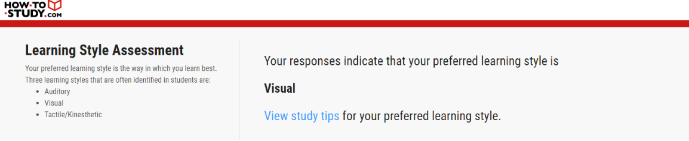
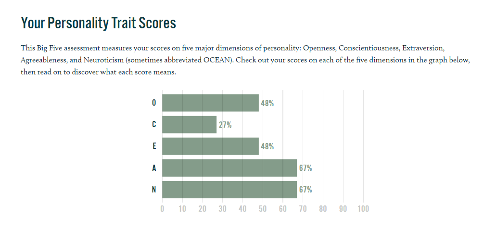

Hi, my name is Haosheng (Alvin) Huang. I was born October 2003, currently 18 and originally from China however I moved to Australia at the age of 4. Since I moved to Australia at an early age I am not as fluent in Mandarin, but my Cantonese is slightly stronger, and I can read, write and converse better in “canto.” I often did go to Chinese school on the weekends to build my Chinese, but it did not work as well as I hoped considering my mandarin is still inadequate. I played a lot of basketball throughout my schooling days for about 4 years where I recently stopped due to the pandemic situation. The only pet I ever owned was a rabbit called bun where the hardest part about owning a pet is to clean up their mess. I am currently a student at RMIT (Royal Melbourne Institute of Technology) studying IT (Information Technology) where my student number is s3953399 and can be contacted through s3953399@student.rmit.edu.au.
My interest in IT first peaked as a little kid, where I was not around technology as much growing up with my only tech being a laptop that I have had for about 6 years. I was into a lot of different types of video games where I spent a lot of my childhood days on. Since I never had a chance to own a console of some sort, I was more interested in PCs where this eventually became my choice to study at RMIT. I never truly understood how the games function and the type of language coding, design and several factors that go into creating a game enjoyable for the audience. When I graduated high school, I was still confused about what to explore and decided it is best to study for a degree where I have some interest in. Influencers like Michael Reeves’s ability to engineer and create useful products/items that allow for convenience to daily life also sparks my interest in learning the ability to code and understand the world of technology. The decision to come to RMIT is within the name of the institution where a lot of my friends were also attending and studying for an IT degree at RMIT sounded very promising. I am not really expecting much during my studies here at RMIT, however I am very keen to learn some fundamentals and explore different areas that IT can provide while also finding a career out of the degree I get.
The position to become a Games Designer for Riot Games, developing a new unpublished MMO styled game can provide a lot of insight on the opportunities available, especially working at a popular gaming company that has excelled in the games they created. This position is particularly interesting as it explores a concept in IT through Artificial Intelligence and designing a game based on that while also getting the perks and benefits of being a Riot employee.
Some qualifications that they require are:
- 5+ years of experience in professional game design
- 3+ years of experience working with AI interactions which includes movement, coordination, combat etc.
- Demonstration of proficiency in scripting
- Worked on at least one AAA+ online game
- Deep level of understanding of multiplayer PvE games
- Create complex mechanics and systems with attention to player impacts and effects.
- They also have desired qualifications which are not requirements but can be needed to strengthen the application in order to work in this specific role. Which includes experience working on live products, friendly AI, AI for open work systems and also combat scenarios.
While some of these skills are for more long-term experienced individuals where I do not have the qualifications or experience of, I do have some level of understanding on how multiplayer PvE games do function whilst progressing through getting the experience at a later date and gaining the knowledge to learn how to proficiently script. Through completing my degree at RMIT, I am able to use that knowledge in order to pursue a possible career path into designing smaller games where that may eventually allow me to progress into creating larger games for bigger companies where it could reach the AAA+ online requirement. While also gaining the experience of professional games design and also working with AI interaction through my internship/work experience. Creating complex mechanics comes from the knowledge and experience I will be able to obtain through working at different companies.
These results could determine the certain characteristics that are shown through the answers to the test. Where an individual may or may not realize. Where this enables certain people to potentially find ways to change how they interact with other people in order to fully utilize the ability to work as a team. Where these tests are also able to find out different characters and could be useful to consider when forming groups. Through similar individuals or complete opposites in order to learn and potentially change for the better.
These results allow for which learning style best suits my needs, especially through understanding the content that is presented and also how to structure my learning habits. Where these results are great for group activities, where this enables you to notify your group members on how you learn the best which enables you to provide your best work when submitting tasks and completing assignments. This should also be considered when forming a group/team as in this case more visual learners within the group allows for convenience in study/shared work where two or more individuals both have similar preferred learning styles for greater effectiveness on understanding the topic.
The Big Five Personality test, similar to the Myers-Briggs test can test what the big five dimensions of personality means to me, where it can explore areas that I was not originally aware of and can work towards being a better person. While I do not think these results should influence behaviour in a team, it can potentially cause some obstacles, especially with the ability to work properly as a team and any factors like selfishness or easygoing traits that may be present. These should be considered but not fully considered when forming a team but more of an awareness to understand your group members and help build trust and teamwork within the group.
Overview: A smartphone application that enables individuals to find discount, coupons, reviews, and many key information that require a lot of time spent to research online where in this instance through non-online purchases provided by different types of companies as they walk into the store and explore the products or services provided through clothing companies. This is all provided in one application, this service allows them to find deals and review the store before walking in and explores the greatest deals or the best customer service that are offered by the stores within the area promoting their business and meeting customer satisfaction.
This project has its utility where it could potentially change the way customers interact with different businesses, especially if they are similar where price conscious user groups can interact with, and it has ease of use. It could be useful for those that would like to have an efficient shop where they may be also more conscious of their time spent in stores to maximize their shopping experiences. The importance of customer service is vital for maintaining and attracting new customers as statistics show that: “One-third of consumers say they would consider switching companies after just one instance of bad customer service.” Where the level of customer service can also be determined through their willingness to provide for their customers and the greatest way to attract is by giving them an incentive to come in the first place through great deals.
This smartphone application is similar but not a complete replica to Yelp and Uber Eats, Deliveroo, Menulog provides features where they may be more versatile when it comes to exploring many nearby clothing stores detected through the GPS with technology like Google Maps. Where it finds the location of the user whilst also detecting nearby stores that are around a 1 km radius from the user. The features include tools like reviews for this specific store instead of the whole company brand found on google, where in some cases stores may treat customers differently compared to another store in a more popular area. This also allows for customers to enjoy the deals that are provided by different stores within the area, where an example can be stores selling comparable products/services however one store has greater reviews and better customer service while also providing better prices. These are factors that can influence the customer’s decision on whether they would like to shop at this specific location. The app requires a lot of customer interaction and business interactions where they may need to manually list their own coupons, discounts, and the expiration date while customers may also need to leave reviews on their unpleasant experiences and any discounts, they may find that are available and not listed by the business. With stores that also have clearance sales and deals that cannot be commonly found online can be listed within the application for convenience.
This smartphone application requires a specific server to host the reviews and live GPS tracking system that locates the individual. A smartphone of some sort is also required to use this software. Software coding is also required where the programming language is currently undetermined and can be achieved through further testing. The fundamentals of using this phone application are also required where users must understand how to utilize the tools in front of them that is offered from the app where this includes being able to understand the reviews, discounts and other aspects that is offered from the application. The knowledge to tackle problems like the ability to attract consumers and producers to provide discounts or reviews is crucial to finding success into this application. The programming/coding language knowledge is also required to successfully host this application into a server where this enables the functionality and features to be working as intended. It may take a bit of time and experience to create this application to what it is designed to do however with good user design, the user’s experience should be simple and straight forward where users are able to easily use the applications with minimal to no experience or support.
If the project is successful, this should allow for an ease of use for shoppers that like to spend their time finding the best deals and be more aware of how certain stores deal with customer service where this is a big issue that revolves around consumer trading. Growth can occur as more use and develop the application into something that can reach greater areas including potential other industries, where consumers and businesses are required to contribute feedback and effort for this application to be successful. The outcome has potential to be great depending on how this application is interacted with and how this can be utilized efficiently and properly.